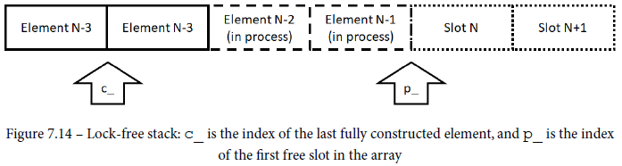
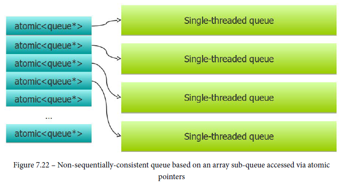

It allows the producer thread to publish information for other threads to consume in a way that guarantees no data races. It can be implemented using any handle that gives access to the memory as long as this handle can be changed atomically. Pointers are the most common handle, of course, followed by array indices.
the key functions are publish() and get(), and they implement the publishing protocol.
template <typename T>
class ts_unique_ptr {
public:
ts_unique_ptr() = default;
explicit ts_unique_ptr(T* p) : p_(p) {}
ts_unique_ptr(const ts_unique_ptr&) = delete;
ts_unique_ptr& operator=(const ts_unique_ptr&) = delete;
~ts_unique_ptr() {
delete p_.load(std::memory_order_relaxed);
}
void publish(T* p) noexcept {
p_.store(p, std::memory_order_release);
}
const T* get() const noexcept {
return p_.load(std::memory_order_acquire);
}
const T& operator*() const noexcept { return *this->get(); }
ts_unique_ptr& operator=(T* p) noexcept {
this->publish(p); return *this;
}
private:
std::atomic<T*> p_ { nullptr };
};
std::shared_ptr guarantees that it is thread-safe for different threads to operate on different shared_ptr instances that point to the same underlying object. But it doesn’t guarantee that two threads access the same shared pointer.
We need the operations on the shared pointer itself to be atomic.
std::atomic<std::shared_ ptr<T>>.std::atomic_store_explicit/atomic_load_explicitstd::shared_ptr<T> p_;
T* data = new T;
… finish initializing the data …
std::atomic_store_explicit(
&p_, std::shared_ptr<T>(data), std::memory_order_release);
std::shared_ptr<T> p_;
const T* data = std::atomic_load_explicit(
&p_, std::memory_order_acquire).get();
RCU stands for "Read, Copy, Update". It can be seen as a publishing protocol.
One of the simplest data structures is stack because stack deals with the top element only.
std::stack has empty(), pop() and top(), they can’t be used together for multi-threaded program.
the entire pop operation should be a single member function: it should remove the top element from the stack and return it to the caller.
template <typename T> class mt_stack {
std::stack<T> s_;
std::mutex l_;
public:
std::optional<T> pop() {
std::lock_guard g(l_);
if (s_.empty()) {
return std::optional<T>(std::nullopt);
} else {
std::optional<T> res(std::move(s_.top()));
s_.pop();
return res;
}
}
};
For top(), it seems we can use the read-write lock to improve the performance of regular mutex lock. In C++, the terminology is different (but the functionality is exactly the same):
But the benchmark result proves it wrong. Read-write lock is worse in performance.
First, we have to figure out what atomic variables are needed.

Assumption:
how to manipulate and check both counts atomically
template <typename T> class mt_stack {
std::deque<T> s_;
int cap_ = 0;
struct counts_t {
int p_ = 0; // Producer index
int c_ = 0; // Consumer index
bool equal(std::atomic<counts_t>& n) {
if (p_ == c_) return true;
*this = n.load(std::memory_order_relaxed);
return false;
}
};
mutable std::atomic<counts_t> n_;
public:
mt_stack(size_t n = 100000000) : s_(n), cap_(n) {}
void push(const T& v);
std::optional<T> pop();
};
The method equal() returns true if the two indices are equal; otherwise, it updates the stored index values from the specified atomic variable. This follows the CAS pattern we have seen earlier: if the desired condition is not met, read the atomic variable again.
To push():
void push(const T& v) {
counts_t n = n_.load(std::memory_order_relaxed);
if (n.p_ == cap_) abort();
while (!n.equal(n_) ||
!n_.compare_exchange_weak(n, {n.p_ + 1, n.c_},
std::memory_order_acquire,
std::memory_order_relaxed)) {
if (n.p_ == cap_) { … allocate more memory … }
};
++n.p_;
new (&s_[n.p_]) T(v);
assert(n_.compare_exchange_strong(n, {n.p_, n.c_ + 1},
std::memory_order_release, std::memory_order_relaxed);
}
The last CAS operation should never fail unless there is a bug in our code: once the calling thread successfully advanced p_, no other thread can change either value until the same thread advanced c_ to match.
To pop():
std::optional<T> pop() {
counts_t n = n_.load(std::memory_order_relaxed);
if (n.c_ == 0) return std::optional<T>(std::nullopt);
while (!n.equal(n_) ||
!n_.compare_exchange_weak(n, {n.p_, n.c_ - 1},
std::memory_order_acquire,
std::memory_order_relaxed)) {
if (n.c_ == 0) return std::optional<T>(std::nullopt);
};
--n.cc_;
std::optional<T> res(std::move(s_[n.p_]));
s_[n.pc_].~T();
assert(n_.compare_exchange_strong(n, {n.p_ - 1, n.c_},
std::memory_order_release, std::memory_order_relaxed));
return res;
}
Whenever we have the case that there are several different ways to access the data structure and they (mostly) do not interact with each other, the general suggestion:
The producer:
The consumer:
Circular buffer
template <typename T> class pc_queue {
public:
explicit pc_queue(size_t capacity) :
capacity_(capacity),
data_(static_cast<T*>(::malloc(sizeof(T)*capacity_))) {}
~pc_queue() { ::free(data_); }
bool push(const T& v) {
if (size_.load(std::memory_order_relaxed) >= capacity_)
return false;
new (data_ + (back_ % capacity_)) T(v);
++back_;
size_.fetch_add(1, std::memory_order_release);
return true;
}
std::optional<T> pop() {
if (size_.load(std::memory_order_acquire) == 0) {
return std::optional<T>(std::nullopt);
} else {
std::optional<T> res(
std::move(data_[front_ % capacity_]));
data_[front_ % capacity_].~T();
++front_;
size_.fetch_sub(1, std::memory_order_relaxed);
return res;
}
}
private:
const size_t capacity_;
T* const data_;
size_t front_ = 0;
size_t back_ = 0;
std::atomic<size_t> size_;
};
template‹typename Element, size_t Size›
class CircularFifo{
public:
enum { Capacity = Size+1 };
CircularFifo() : _tail(0), _head(0){}
virtual ~CircularFifo() {}
bool push(const Element& item);
bool pop(Element& item);
bool wasEmpty() const;
bool wasFull() const;
bool isLockFree() const;
private:
size_t increment(size_t idx) const;
std::atomic‹size_t› _tail;
Element _array[Capacity];
std::atomic‹size_t› _head;
// or use aligns
// alignas(64) std::atomic<size_t> _head;
// alignas(64) std::atomic<size_t> _tail;
};
Empty
When the buffer is empty, both indexes will be the same. Any reads by the Consumer will fail.
bool wasEmpty() const
{
return (_head.load() == _tail.load());
}
bool isEmpty() const
{
return head.load(index_acquire_barrier) == tail.load(std::memory_order_relaxed);
}
Full
When the queue is full, there will be a one slot difference between head and tail. At this point, any writes by the Producer will fail. Yes it must even fail since otherwise the empty queue criterion i.e. head == tail would come true.
bool CircularFifo::wasFull() const
{
auto index = _tail.load();
auto next_tail = (index + 1) % Capacity; // default std::memory_order_seq_cst.
return (next_tail == _head.load());
}
bool full() const
{
return buffer_size ==
(head.load(std::memory_order_relaxed) - tail.load(index_acquire_barrier));
}
Sequential Consistent Version
/* Producer only: updates tail index after setting the element in place */
bool push(Element& item_)
{
auto current_tail = _tail.load();
auto next_tail = increment(current_tail);
if(next_tail != _head.load())
{
_array[current_tail] = item;
_tail.store(next_tail);
return true;
}
return false; // full queue
}
/* Consumer only: updates head index after retrieving the element */
bool pop(Element& item)
{
const auto current_head = _head.load();
if(current_head == _tail.load())
return false; // empty queue
item = _array[current_head];
_head.store(increment(current_head));
return true;
}
size_t increment(size_t idx) const
{
return (idx + 1) % Capacity;
}
Acquire-Release/Relaxed Version
bool push(const Element& item)
{
const auto current_tail = _tail.load(std::memory_order_relaxed); // 1
const auto next_tail = increment(current_tail);
if(next_tail != _head.load(std::memory_order_acquire)) // 2
{
_array[current_tail] = item; // 3
_tail.store(next_tail, std::memory_order_release); // 4
return true;
}
return false; // full queue
}
push() it is guaranteed that the tail value will be the latest. No cross-thread synchronization is needed for the load.bool pop(Element& item)
{
const auto current_head = _head.load(std::memory_order_relaxed); // 1
if(current_head == _tail.load(std::memory_order_acquire)) // 2
return false; // empty queue
item = _array[current_head]; // 3
_head.store(increment(current_head), std::memory_order_release); // 4
return true;
}
pop() it is guaranteed that the head value will be the latest. No cross-thread synchronization is needed for the load.If you don't care about the exact ordering of the element being pushed and popped into the queue, we can have a data structure like this: instead of a single queue thread-safe queue, we can have several single-threaded sub-queues. Each thread must atomically acquire exclusive ownership of one of these sub-queues.

std::atomic<int> wait; // 1 if managing memory
std::mutex lock;
while (wait == 1) {}; // Memory allocation in progress
if ( … out of memory … ) {
std::lock_guard g(lock);
if (… out of memory …) { // We got here first!
wait = 1;
… allocate more memory …
wait = 0;
}
}
… do the operation normally …
Watch for A-B-A problem.